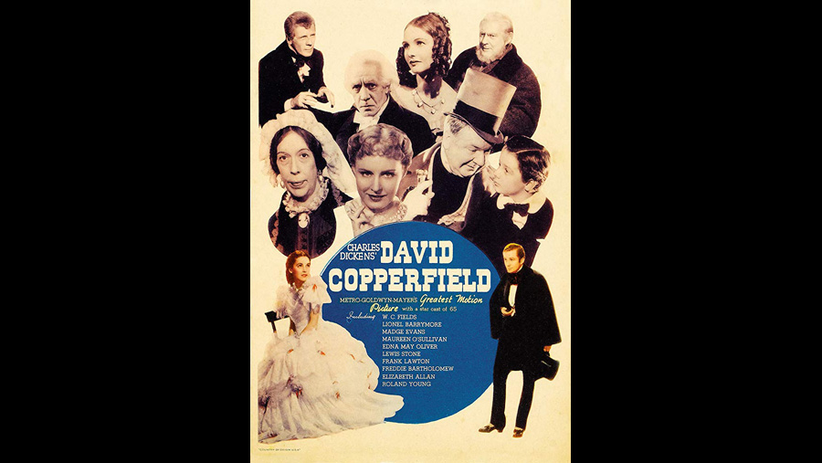

1935

CAST
David Copperfield (as a boy)
-
Freddie Bartholomew
Clara Copperfield
-
Elizabeth Allan
Betsey Trotwood
-
Edna May Oliver
Clara Peggotty
-
Jessie Ralph
Dr. Chillip
-
Harry Beresford
Vicar
-
Hugh Walpole
Edward Murdstone
-
Basil Rathbone
Barkis
-
Herbert Mundin
Dan Peggotty
-
Lionel Barrymore
Ham Peggotty
-
John Buckler
Mrs. Gummidge
-
Una O'Connor
Little Em'ly (as a child)
-
Faye Chaldecott
Jane Murdstone
-
Violet Kemble Cooper
David Copperfield
-
Frank Lawton
Little Em'ly
-
Florine McKinney
Agnes Wickfield (as a child)
-
Marilyn Knowlden
Mr. Wickfield
-
Lewis Stone
James Steerforth
-
Hugh Williams
Wilkins Micawber
-
W. C. Fields
Emma Micawber
-
Jean Cadell
Clickett, Mickawber's maid
-
Elsa Lanchester
Mr. Dick
-
Lennox Pawle
Janet, Aunt Betsey's maid
-
Renee Gadd
Dora Spenlow
-
Maureen O'Sullivan
Uriah Heep
-
Roland Young
Agnes Wickfield
-
Madge Evans
Littimer, Steerforth's servant
-
Ivan F. Simpson
Mary Anne
-
Mabel Colcord
CREATIVE TEAM
Director
-
George Cukor
Written By
-
Hugh Walpole
Producer
-
David O. Selznick
FILMING LOCATIONS
Cedric Gibbons designed a recreation of 19th century London on the MGM backlot. The scenes set outside Aunt Betsey's house atop the white cliffs of Dover were filmed at Malibu. MGM even filmed the exterior of Canterbury Cathedral, which only appears in the film for less than a minute. Special effects, including many matte shots, were by Slavko Vorkapic.